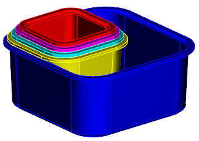

右击装配导航器背景并确保已选中 WAVE 模式。
在装配导航器中，右击部件 5并选择 WAVE→在会话中冻结。
选择装配→WAVE→加载部件间数据。
在加载部件间数据对话框中，设置如下参数：
所显示装配中的所有部件 =
会话中的所有部件 =
打开未加载的父项 = 无
点击确定。
所有包含部件间数据的组件都将被完全加载，除了部件 5之外的所有部件都将更新到新链接面的大小，部件 5当前被冻结以防止会话中的任何更新，您也可以永久冻结组件，这意味着它只有在您强制更新时才进行更新。
